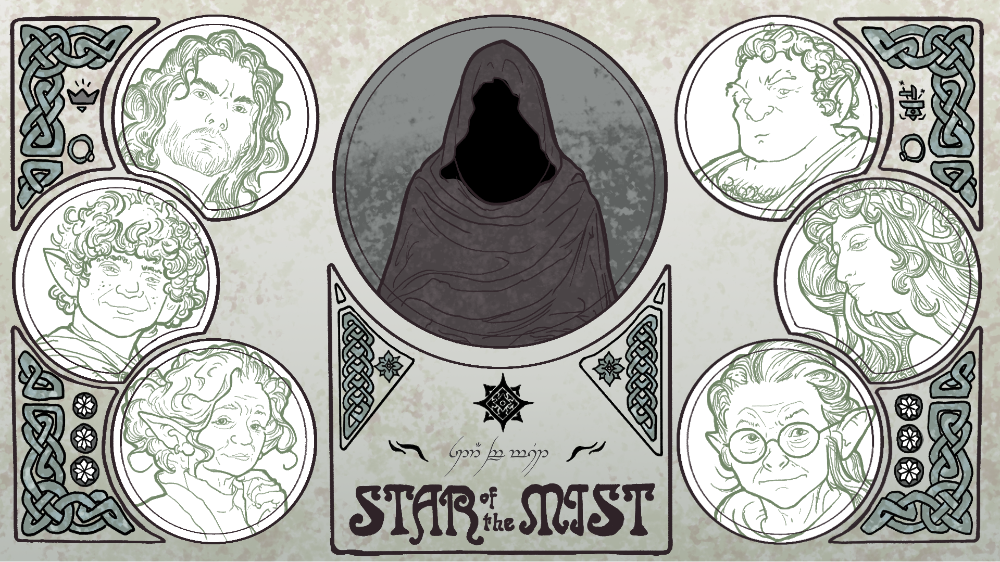
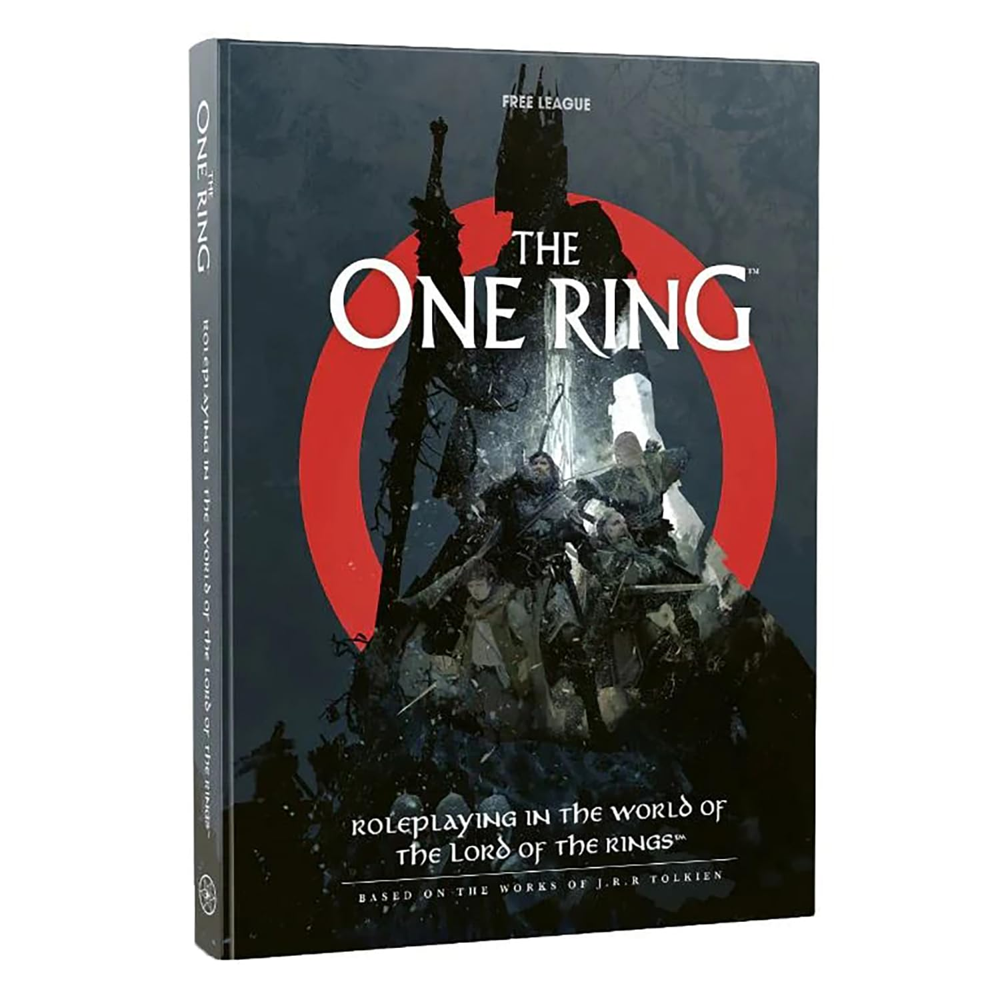

The Star of the Mist: Episode 1
The company begins its journey.
Adventure in Middle-earth

The One Ring is the official tabletop roleplaying game of J.R.R. Tolkien's Middle-earth from Free League Publishing. Players take on the roles of heroes travelling through a land shaped by ancient evils, hard choices, and the hope that survives them. Our first journey follows a small company into danger with a story from the core rules book.

Live-play schedule dates are listed on the main page.
Series one
The Star of the Mist begins in the Prancing Pony, where Barliman sets an unlikely group of Bree-folk on the road to deal with brigands to the south. When the company discovers the brigands' camp, they learn of an ancient tower in the easternmost foothills of the southern Ered Luin, the remains of a powerful castle from the time of the Kings. Wanderers speak of an eerie blue light visible even from Sarn Ford, like a star shining above the river mists, and people have recently begun to disappear in its vicinity. With no one willing to go there, the company must uncover the truth behind the Star of the Mist.
 Josh
Josh Katie
Katie Sam
Sam SimonWarden
SimonWardenThe company begins its journey.

The journey continues into danger.